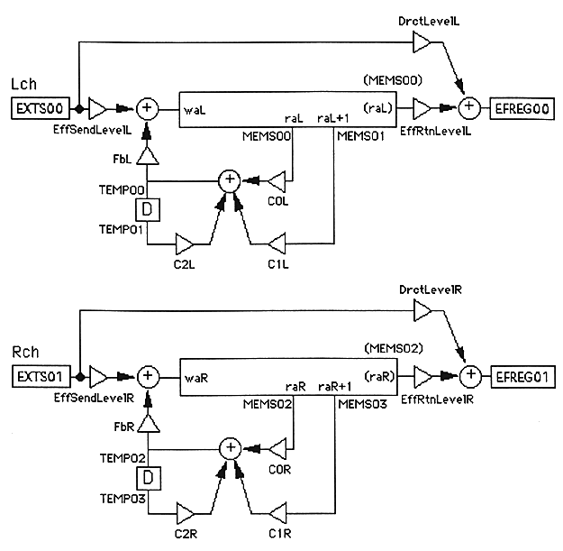

★SOUND Manual
★SCSP/DSPアセンブラユーザーズマニュアル
★SOUND Manual
★SCSP/DSPアセンブラユーザーズマニュアル
以下に、dAsmsにおけるDSPプログラムのコーディング方法を、比較的簡単な具体例に沿って解説します。
以下のプログラム例は、CD Audio等が入力可能な外部拡張入力 EXTS00、EXTS01をそれぞれLch、Rchの入力とし、Lch、Rch独立にディレイ(エコー)処理を行った結果をそれぞれ EFREG00、EFREG01 に出力しようとするものです。

| ディレイへのセンドレベル | ：EffSendLevelL/R |
| ダイレクト信号のレベル | ：DrctLevelL/R |
| ディレイからのリターンレベル | ：EffRtnLevelL/R |
| ディレイ信号のフィードバックレベル | ：FbL/R |
-----------------------------------------------------
EffSendLevelL=%100
EffSendLevelR=%100
DrctLevelL=%50
DrctLevelR=%50
EffRtnLevelL=%75
EffRtnLevelR=%75
FbL=%50
FbR=%50
-----------------------------------------------------
C0L/R
C1L/R
C2L/R
C0L=0.40893
C0R=0.40893
C1L=0.40893
C1R=0.40893
C2L=0.18164
C2R=0.18164
waL/R
raL/R
----------------------------------------------------------------
waL=ms0.0
raL=ms149.9
waR=ms150.0
raR=ms249.9
----------------------------------------------------------------
raL
raL+1
MEMS00
MEMS01
LDI MEMS00,MR[raL+DEC]
LDI MEMS01,MR[raL+DEC+1]
--------------------------------------------------------------------------
@ TEMP01 * C2L + ( MEMS01 * C1L + ( MEMS00 * C0L + ) ) > TEMP00
--------------------------------------------------------------------------
--------------------------------------------------------------------------
@ TEMP00 * FbL + ( EXTS00 * EffSendLevelL + ) > MW[waL+DEC]
--------------------------------------------------------------------------
--------------------------------------------------------------------------
@ EXTS00 * DrctLevelL + ( MEMS00 * EffRtnLevelL + ) > EFREG00
--------------------------------------------------------------------------
--------------------------------------------------------------------------
'dAsms sample program.
'Function:L/R independent delay
'CD Lch Direct + Delayed -> EFREG00
'CD Rch Direct + Delayed -> EFREG01
#COEF
'Levels
EffSendLevelL=%100
EffSendLevelR=%100
DrctLevelL=%50
DrctLevelR=%50
EffRtnLevelL=%75
EffRtnLevelR=%75
FbL=%50
FbR=%50
'FilterCoefs
C0L=0.40893
C0R=0.40893
C1L=0.40893
C1R=0.40893
C2L=0.18164
C2R=0.18164
#ADRS
waL=ms0.0
raL=ms149.9
waR=ms150.0
raR=ms249.9
#PROG
'Lch
LDI MEMS00,MR[raL+DEC]
LDI MEMS01,MR[raL+DEC+1]
@ TEMP01 * C2L + ( MEMS01 * C1L + ( MEMS00 * C0L + ) ) > TEMP00
@ TEMP00 * FbL + ( EXTS00 * EffSendLevelL + ) > MW[waL+DEC]
@ EXTS00 * DrctLevelL + ( MEMS00 * EffRtnLevelL + ) > EFREG00
'Rch
LDI MEMS02,MR[raR+DEC]
LDI MEMS03,MR[raR+DEC+1]
@ TEMP03 * C2R + ( MEMS03 * C1R + ( MEMS02 * C0R + ) ) > TEMP02
@ TEMP02 * FbR + ( EXTS01 * EffSendLevelR + ) > MW[waR+DEC]
@ EXTS01 * DrctLevelR + ( MEMS02 * EffRtnLevelR + ) > EFREG01
#END
--------------------------------------------------------------------------
★SOUND Manual
★SCSP/DSPアセンブラユーザーズマニュアル